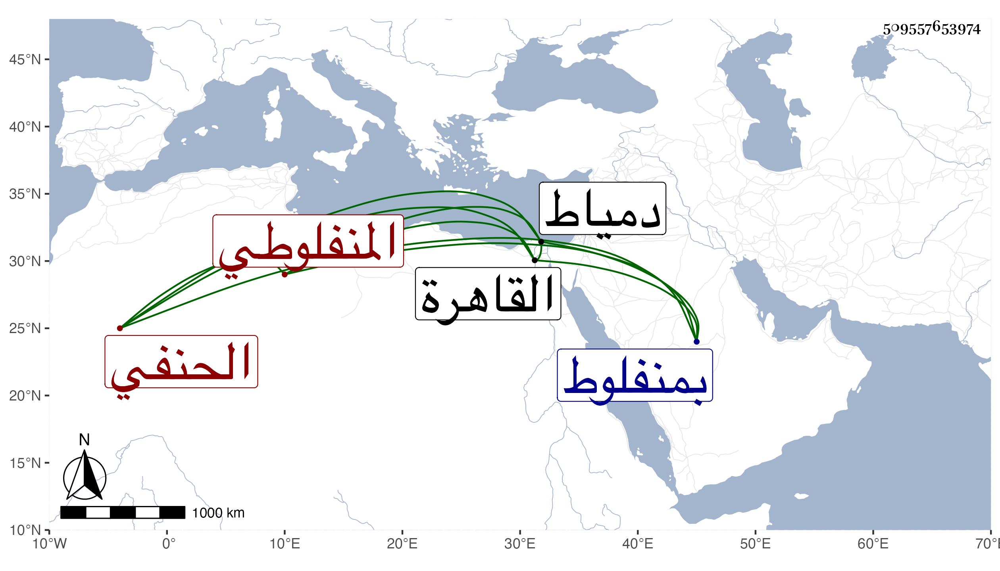

0902Sakhawi.DawLamic.ITO20230111-ara1.EIS1600.509557653974
Biography ID: 509557653974
553
فتح الله بن عبد الرحيم بن أبي بكر بن أحمد بن حسن المنفلوطي الحنفي نزيل الشيخونية وأحد صوفيتها ويعرف بابن الفرجوطي نسبة لبلدة بالقرب من هو . ولد في صلاة العصر من يوم السبت رابع عشري ربيع الأول سنة ست وخمسين وثمانمائة بمنفلوط ونشأ بها فحفظ القرآن وكان يقرئ مماليك سيباي الكاشف ويؤم كأبيه بجامعها ثم قدم القاهرة سنة تسع وسبعين فقرأ على الديمي الكتب الستة والموطأ والشفا والتذكرة وغيرها وتنزل في الشيخونية من التي تليها وحفظ ثلثي القدوري وتفقه فيه على الصلاح الطرابلسي ولازمهما كثيرا ومما أخذه عن الصلاح أوقاف الخصاف وختم عليه كتابه وكذا قرأ على الغزي القاضي قبل قضائه وبعده ، وكتب بخطه الحسن الكثير لنفسه ولغيره وشرع في كتابة مسند أحمد فكتب منه زيادة على مجلد ، وناب في الخطابة بالبرقوقية وقتا وخطب بأماكن وغيرها ولازمني في قراءة أشياء كتمثال النعل وأربعي المنذري في قضاء الحوائج وكذا قضاء الحوائج لابن أبي الدنيا والصمت له ومكارم الأخلاق للخرائطي وللطبراني واغتبط بذلك مع قوة في الدين وتقنع ودخل دمياط للنزهة وماتت أمه فسافر إلى بلده لذلك ثم حكى لي عنه ما لم أرتضه والله أعلم .
